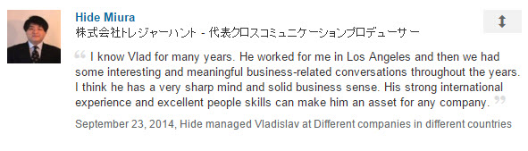
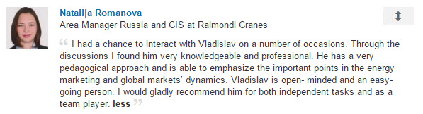
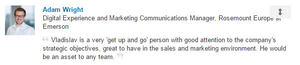
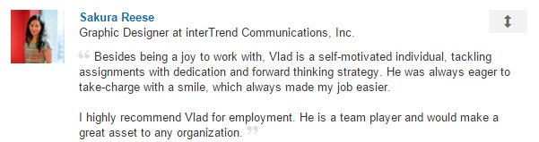

My Expertise in Online Marketing, SEO and Social Media

LinkedIn Recommendations:
- 

- 


- 
- 
With a variety of experiences in multiple industries, I am very good at online marketing, SEO (search engine optimization) and social media.
I can create the winning online strategy for your business and execute it too.
I understand well both the technical and human side of online marketing and SEO. This allows me to achieve excellent long-lasting results fast.
SEO
I published a book on SEO: Ultimate SEO (Amazon), so I know (and can do) almost everything SEO-related :)Sometimes I build sites just to run SEO experiments:
http://awesomephotography.xyz/ >>> more than 23000 pages indexed
http://it-training.xyz/ >>> more than 49000 pages indexed
Analytics Applications:
I like these two tools:Google Analytics
Piwik
Marketing Automation
When it comes to Marketing Automation, I used most of the tools on the market. Many companies tend to overdo it with the tools these days. It might create confusion, heavy learning process and distraction. The important thing is not to use the “best” tool, but to understand what data is needed & the desired outcome. Then we design the right process (sequence of events) and find the right application (or multiple applications that will work well together).By the way, I recently wrote a brief article about marketing automation.
Social Media
I’m active on social media:My Twitter: 5400 high-quality followers
My LinkedIn: 4500 connections
Social Media management tools I have experience with:
Hootsuite
Social Quant
SocialBro
And many other tools.
Content Creation, Content Curation and Content Marketing
I’m an advanced WordPress developer and user (it's the most popular CMS - Content Management System).Just for fun I publish 2 online newspapers: International Business Journal and The Smarter You Daily
These are some of the content curation tools I worked with:
Curation Suite
paper.li
Scoop.it!
And many other tools.
Email Marketing
I worked with:MailChimp
AWeber
And other tools.
CRM Systems
I have quite extensive experience with:Salesforce
Pipeliner
Pipedrive Please get in touch to discuss your successful online project!